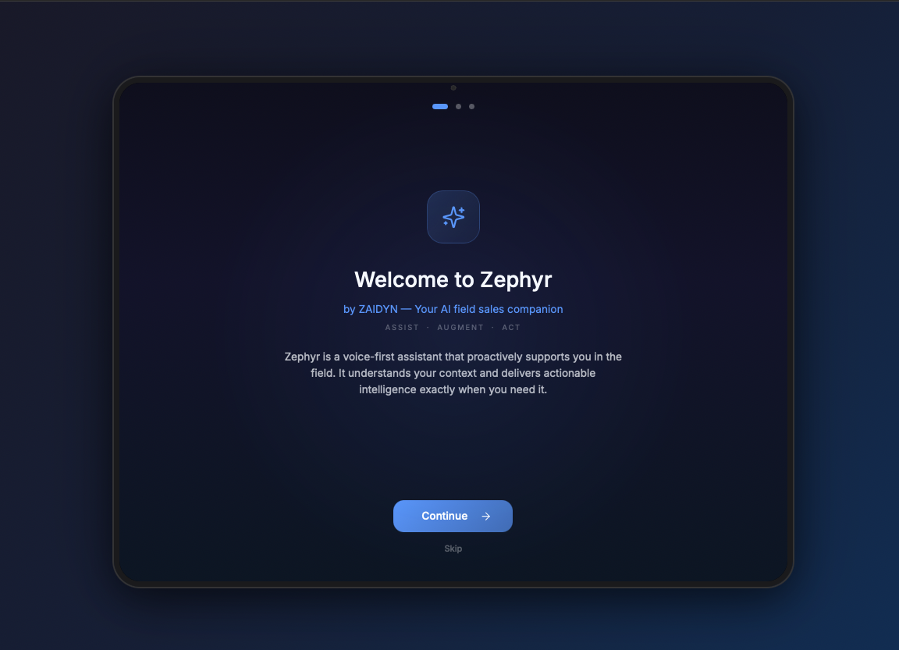

I design AI products that pharma sales and medical teams actually trust enough to use.
Twelve years leading design teams — twenty designing — in regulated industries where a bad AI suggestion gets ignored on sight.
AI-powered CRM, revenue ops, and sales engagement software for MedTech commercial teams who don't have time to figure out a new tool mid-shift.
MCE Agent — Medical & Customer Engagement
ZS, ZAIDYN — Design Manager
Result: live AI assist layer now in front of pharma commercial teams, with AI-drafted pre-call prep replacing manual research.
Reps were piecing together scheduling and account context across three separate systems before every call. We put one home dashboard with KOL highlights and an Agent Assist panel that surfaces the next best action right where reps already are.
Performance Management Center
Aktana — Head of Design
Result: got AI-skeptical reps in a highly regulated industry to actually trust and act on the suggestions.
AI recommendations get ignored fast in pharma if reps can't see the reasoning. The dashboard pairs live revenue and engagement data with next-step tips, and always shows the why alongside the what.
Campaign Journey Flow Builder
Aktana — Director of Product Design
Result: non-technical marketing teams could build and launch multi-channel journeys without an engineering ticket.
A drag-and-drop map for pharma marketing teams to create, check, and send full customer journeys across channels themselves.
Next Best Action — Mobile
Aktana — Director of Product Design
Result: became the one app reps opened first every morning in the field.
Schedule, AI-driven suggestions, account data, and key numbers, combined into a single trusted tool for daily use — not another dashboard to check.
Clinical Provider Portal
Counsyl — Lead UX Designer
Result: cut inbound support tickets by more than 50% in the first year after launch.
The prior portal generated enough friction that clinicians said as much directly — the most common feedback after launch was simply, "You fixed it." Test ordering, reporting, patient education, and case management, rebuilt into one clinical workflow in under a year.
Deep dive — ZS, ZAIDYN, 2026
Zephyr, an AI field companion
A voice-first AI assistant for pharma reps: it knows the schedule, the accounts, and the goals, and surfaces the right intelligence before, during, and after every call.
Meet Zephyr
A voice-first assistant that proactively supports reps in the field, understanding context and delivering intelligence exactly when it's needed.
What it knows
Schedule and call plan, location and nearby accounts, team structure, current priorities. No setup, no manual data entry.
What it does
Proactive, real-time intelligence and in-the-moment guidance during calls, cutting prep time so reps can focus on the relationship.
The morning dashboard
AI-prioritized highlights — KOLs to act on, prescribing pattern changes, suggested next steps — before the first call of the day.
In the room
Real-time coaching during the call: acknowledging talking points, flagging concerns, helping the rep respond with confidence.
The debrief
A session score breaking down rapport, clinical knowledge, objection handling, and closing — a clear picture of where to grow.

Philosophy
Outcome-first. Human-centered. Always.
The job of design is to know what users are trying to get done, what success means to them, what gets in their way, and where they are when they use the product.
01
Outcome oriented
If the results meet the goals, success has been achieved. The process isn't the point — people getting value from the product is.
02
Collaborative by nature
Good design comes from working with everyone involved. Define the problem together, understand it together, solve it together.
03
Human-centered foundation
A background in psychology, human development, art, and education. Every design choice starts with the real person using the product.
04
Growth mindset leadership
The best teams keep learning. They share what they know, but come to every conversation ready to listen, not just to be right.
Experience
Twelve years leading teams. Twenty designing.
2023 – Present
Design Manager
ZS, ZAIDYN Medical & Customer Engagement
Runs two global product lines, managing 14 designers across US and India.
Increased team output 27% with structured handoffs
Improved retention 14% via a structured learning program
Led AI fluency enablement across the design team
Keynote speaker and co-author on trust in AI products
2022 – 2023
Head of Design
Aktana (acquired by PharmaForceIQ, Jan. 2026)
Owned the full product experience across 5 life-sciences personas.
Reduced product complexity in a highly regulated domain
Named most inspiring employee, Aktana's first engagement survey
2019 – 2022
Director of Product Design
Aktana
Founding designer. Built and scaled design operations as the product line expanded, using a data-informed approach across the field-force platform.
2018 – 2019
Director of Product Design
Myriad Genetics (via Counsyl acquisition)
Merged multiple design teams into one enterprise experience for genomics testing after the acquisition.
2017 – 2018
Lead UX Designer
Counsyl
Launched a new provider portal in under a year, cutting support tickets over 50% and raising release rate 30%.
2016 – 2017
UX Studio Staff Designer
Macy's
Player/coach for 12 designers, running two-week sprints to validate new eCommerce concepts.
2015 – 2016
Senior Director
R2C Group (now Rain the Growth Agency)
Led ideation and digital design across 5 major client brands, spanning healthcare, telecom, and retail.
2014 – 2015
Senior UI/UX Designer
Walmart eCommerce
Led design for "Sustainability Leaders," Walmart's first dedicated shop for sustainably made goods.
2011 – 2014
Immersive Experience Designer
America's Cup Event Authority
Delivered branding, wayfinding, and viewer experiences across 9 countries; sponsorship and viewership rose 80% over the prior event.
Recognition
What people say.
"Thomas is the kind of design leader who completely transforms a team's culture and elevates the work — he relentlessly backed our design team, bringing high-level product strategy to the table and stabilizing our development cycles so we always had a solid foundation to design against. Wherever Thomas goes next, his team will thrive and design will have a real seat at the table."
Alice Chen — Lead Designer, ZS (direct report), 2026
"Thomas didn't just evaluate work, he named things precisely — identifying exactly where you were in your growth and what the next shift needed to look like, in a way that was honest without being harsh. He gave me ownership of complex, high-stakes work and let me figure it out; that's not negligence, that's a deliberate choice to accelerate someone's growth. Anyone working under Thomas will grow, and they'll understand exactly why."
Prasad Gadve — ZS (direct report), 2026
"Any place that is lucky enough to add Thomas to their team should have the confidence that they have a strong and thoughtful leader on their hands. Thomas went above and beyond to coach me through how AI was applied in product and helped round out my UX research skill set."
Tim Medvitz — Senior Product Designer, formerly at Aktana (direct report)
"Thomas did a tremendous job with his keynote on bringing the human to AI. There were roughly 220 people at the event, and I got texts from principals during the talk about how much they enjoyed it. He is a great public speaker and very thoughtful."
Nicolle Hamilton — Principal, ZS, on Thomas's GenAI-palooza keynote, 2024
Let's talk
Ready to build something that matters?
Design leadership for AI, MedTech CRM, and enterprise software — the kind that has to work in a regulated industry on day one.